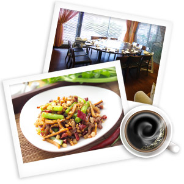

以創意料理、健康取向、優質服務為理念，走出傳統展現新的美食文化
home > 關於阿堂
阿堂一個卓絕的餐廳，讓顧客能夠吃得隨性吃得自在

阿堂是一個親切的小名。
來自半導體業界，有科技人的執著精神，以精巧創意提供顧客健康的料理，期許未來建立一個卓絕的餐飲事業，讓顧客能夠「吃得隨性」、「吃得自在」，塑造新的精緻美食風格。
因熱愛美食而投入餐飲業，以創意料理、健康取向、優質服務為理念，在竹北市興建280坪二層樓的營業店面，希望讓新竹人也能吃出文化、吃出健康，走出傳統展現美食新文化。
- 本店嚴選台灣最優質的豬肉 - 香草豬(香草豬十大
- 完美保證，採用鼠尾草、迷迭香、羅勒…等歐式香草
- 及特殊中草藥配方飼養，達到肉品安全、風味獨特、
- 健康養生的三大優質目標) 。本店嚴選頂級牛肉-
- 美國安格斯牛小排 。
- 以客為尊 。
- 重視顧客用餐感受,以顧客意見調查表作為阿堂管理改善的指標。
- 尊重女性，男廁與女廁分設於不同樓層(女廁於1F，男廁於2F)。
- 1 樓與2 樓設置外場洗手台，加強對SARS、禽流感與新流感的防護，也關注兒童洗手清潔。
- 停車場特約優惠。
- 「科技城市，文化饗宴」的新主張。
- 在科技菁英群聚的新城市中，打造一個關懷人文的風尚餐廳，提供獨特的產品與優質的服務 。
- 「阿堂」昔日童年純真的舊夢想，今日事業有成的新理想 。
- 打造一個有願景的團隊，結合企業管理與廚藝專業
- 積極落實3S與資訊化，跳脫傳統餐飲管理模式
copyrights 2010 by tang-bistro. all rights reserved.